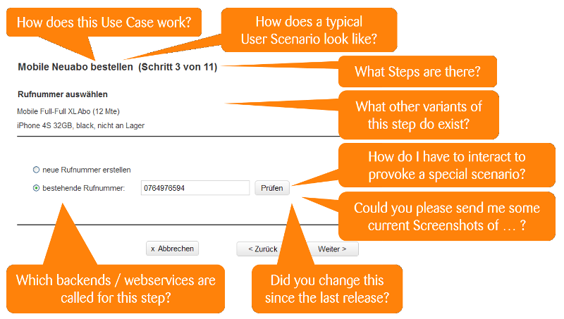
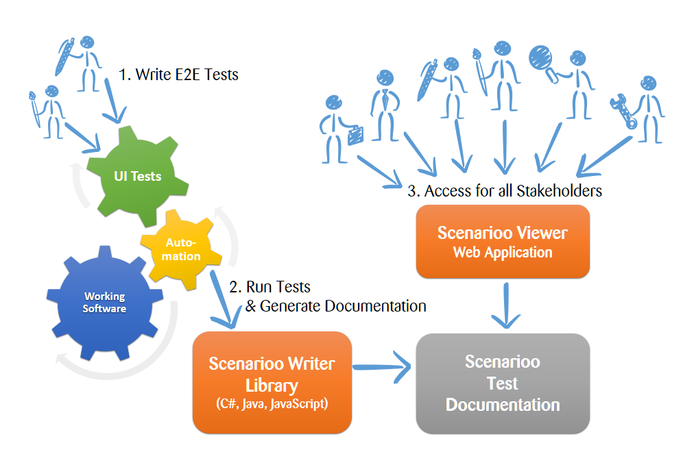
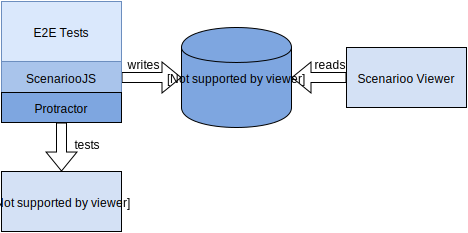
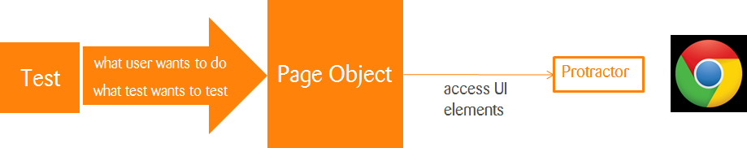
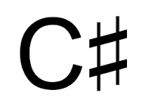
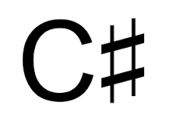

Effective UI/E2E Testing
with ScenariooJS and Protractor

Dominic Langenegger, Michael Werner, Rolf Bruderer
What is it about?
- E2E/UI-Testing and Documentation of Applications
- Structuring and Designing Test Suites
- Using Protractor and ScenariooJS
- Practical Hints and Examples from real Projects
UI/E2E-Tests? WHY?
My Architect told me to only do Unit Tests!
Real Hackers
- Okay, let's implement "Foo"!
- I refactor X, Y and Z and all usages of them
- I know it also impacts features A and B
- I do some manual testing
- It works! Done!
- Let's release it!
Reality
Imagine 10 Coders doing this in parallel ...
- In Same Code Base
- Without Knowing All System Functionalities
- Under Project Pressure
- In Untyped Javascript Code
- Without Automated Tests
"I write Code that works"
Yes!
So let's make sure
your colleagues won't break it!
Coder's Ropes and Slidelocks
Who Should Write Tests?
- Only Special E2E Tester / Testing Team ?
Who Should Write Tests?
ONLY Special E2E Tester / Testing Team ?
- NO!
- Beware of unnecessary Silos!
- Silos are for Farmers not for Software Engineers https://creativeheldstab.com/silos-are-for-farmers/
Tests are a Tool for the Developers!
Tests for Developers
- Developer can verify his changes
- Developer gets feedback if tests broken
- Developer can adjust tests to his changes
- Developer keeps tests green when refactoring
- Red tests = broken window syndrome
- Tests are best written by Developers
What do Dedicated Testers do?
- Manual testing
- Review automated tests
- Help the dev team
- build infrastructure for testing
- write automated test suites
No Time to Write Tests?
Test Pyramid

End-to-End Tests
- Registration of new User
- Open Application
- Click Registration Link
- Fill out Form
- Hit Registration Button
- Check if user in DB
Scenarioo
- Continuous Documentation
- Tests as Living Documentation
- Visible for everybody involved!
- Reviewing Tests
- Analysing Tests
- Gather Information from Tests
- How this works
One App - Many Questions
 Scenarioo helps answer these questions ...
Documentation - Famous Words
Working Software over comprehensive Documentation
Documentation is in the Code
Code IS the Documentation
Tests are Documentation
Scenarioo - How it works ...

ScenariooJS Architecture Overview

Scenarioo Viewer
Jump through User Scenarios like a Kangaroo ...
demo.scenarioo.org
For all Stakeholders
E2E Test Architecture
- What are my Ends?
- Test Setup
- Other Systems
- Test Data
E2E - What are my Ends?
What have the developers in your team under their control?
If the test is broken, the developer must be able to fix it!
E2E Test Setup
 Subsystem not under your control: fake it!
Subsystem not under your control: fake it!
Fake what you don't control!
- DB: well defined test data set
- Other Systems: Stub / Fake / Mock / Test Fixture
- Define it in your source repository in a well maintainable way
Control your Ends
Document Expectations about other Systems
{
"stringValue": "Our UI can display generic string values!",
"dateValue": "1978-06-13"
}
A Specification by Example of what our system can consume
Test Data becomes difficult to maintain
- Engineer it!
- Design and structure your test data well
- Only as little test data as needed
- Write Generators to define maintainable test data
- NOT use snapshots from testing systems
E2E Test Design
- How to structure your test suites?
- How to choose good test scenarios?
- Tests as Functional System Documentation
- Tests as Specification by Example
Good E2E Test Scenarios
- Test System Functionalities
- Concrete Usage Scenarios
- Full E2E Usage Process
- From User's point of view
- Written in Business / User Language
- NOT test Components in isolation!
An Example Scenario
- Order Virtual Machine on System
- Choose System where you want to Create it
- Open Machine Creation Wizard
- Enter Configuration Data
- Check Order Confirmation and Price
- Submit Order
- Expect that the correct Order has been sent
Use Cases and Scenarios
Structure Scenarios by Use Case
Use Case
- A goal the user wants to achieve
- Usually an action = verb and subject(s)
- Not too fine granular!
- Boss Test
- Coffee Break Test
Scenario = Test Case = One flow through the use case
Good Use Cases Examples
- Open Account
- Create Task
- Edit Person
- Virtual Machine - Add Disk
- Virtual Machine - View
Bad Use Case Examples
- Login
- Select Birthdate for Person
- Validate Date Fields
- Autocomplete Addresses
- Browse User Navigation
Group Usecases by Subject
- User
- Create Account
- View Profile
- Edit Profile
- Task
- Create
- Edit
- Assign
- Mark Done
Scenarios per Use Case
A hand full of scenarios per use case:
- Most Important Happy Scenario
- Only with minimal "required properties"
- Most Important Alternative Happy Scenarios
- at least one with all optional fields set
- Special Validation Scenario
- first enter wrong
- check for validation messages
- then correct it
- Error Scenarios?
- e.g. when the backend blocks
Good Scenario Examples
Use Case "Task - Create"
- Task in Project
- Sub-Task
- Task with all Options
- Task with Validation
- Fail on Project Closed
Bad Scenario Examples
Use Case "Player - Find"
- Find by exact Name
- Find by Name with Special Characters
- Find by similar Name entered
- Find by partial Name & Nationality
- Find by partial Name & Birthdate
- Find by partial Name and Birthdate only matches Birthyear
- Find by Name and Birthdate, also if month and day in birthdate exchanged
Balance well!
Avoid E2E-Testing Creep
1 hand full of scenarios per use case
focus on high-level business functionality
Balance well!
DON'T test all details of complex logic in E2E tests
Extract that logic into a Component / Service / Class / Function
Extensively test that Logic in Unit Tests
Exercise & Discuss
Think about your Application ...
- What are your Subjects & Use Cases?
- Define Scenarios for one Use Case
- What should be tested as E2E Test?
- Discuss in Small Groups
Writing E2E tests
- Protractor and Jasmine 2
- Write Maintainable and Stable Tests
- Go well together with ScenariooJS (later!)
A simple test
describe('Example Use Case', function() {
it('Example Scenario', function() {
browser.get('/index.html');
element(by.css('li#item_one')).click();
expect(element(by.id('selected')).getText()).toEqual('one');
});
});
So far so good, let's look at a bigger example.
A not so simple test
describe('Example Use Case', function() {
it('Example Scenario', function() {
browser.get('/index.html');
var firstname = by.id('#firstname');
element(firstname).sendKeys('Stephen');
var lastname = by.id('lastname');
element(lastname).sendKeys('Strange');
element(by.id('#submit')).click();
expect(element(by.id('#message'))).getText()
.toEqual('Registration successful!');
});
});
Cool, but it's starting to get a bit messy...
Soon problems arise
- What page am I on?
- What distinct user actions are possible?
- What if elements reappear on other pages?
- Are these tests maintainable?
The solution? Page objects!

Page Objects ...
- ... provide an interface driven by tested functionality
- ... hide the complexity of UI interactions
- ... enable reusable logic for reoccurring components
- ... make nicer code :-)
Example page object
var RegistrationPage = {
var firstnameTextbox = element(by.id('#firstname'));
var lastnameTextbox = element(by.id('#lastname'));
var registerButton = element(by.id('#submit'));
this.register = function(firstname, lastname) {
firstnameTextbox.clear();
firstnameTextbox.setText(firstname);
lastnameTextbox.clear();
lastnameTextbox.setText(lastname);
registerButton.click();
};
}
Reusable components
var TextBox = function(element) {
this.element = element;
this.set = function(value) {
element.clear();
element.sendKeys(value);
}
this.clear = function(value) {
element.clear();
}
}
Reusable components
var RegistrationPage = {
var firstnameTextbox = new TextBox(element(by.id('#firstname')));
var lastnameTextbox = new TextBox(element(by.id('#lastname')));
var registerButton = element(by.id('#submit'));
this.register = function(firstname, lastname) {
firstnameTextbox.set(firstname);
lastnameTextbox.set(lastname);
registerButton.click();
};
}
Let's revisit our example
describe('Example Use Case', function() {
it('Example Scenario', function() {
registrationPage.open()
.register('Stephen', 'Strange');
confirmationPage.expectRegistrationSuccessful();
});
});
The intention of the code becomes visible.
Summary
- Start early with defining page objects and components
- Interface of page objects is functional
- Not technical
- Not driven by UI structure
- Keep tests short
- Don't test too much stuff
Bringing in Scenarioo
OK cool, but how do I activate this Scenarioo now?
Bringing in Scenarioo
For installation and configuration see: https://github.com/scenarioo/scenarioo-js/blob/develop/README.md
Protractor configuration
onPrepare: function onPrepare() {
global.scenarioo = require('scenarioo-js');
scenarioo.setupJasmineReporter(jasmine, {
targetDirectory: './scenariooReports',
recordLastStepForStatus: {
failed: true,
success: true
},
...
}
And with some slight changes...
describe('Example Use Case', function() {
afterEach(scenarioo.saveLastStep);
it('Example Scenario', function() {
registrationPage.open()
.register('Stephen', 'Strange');
confirmationPage.expectRegistrationSuccessful();
});
});
Documentation activated!
- One use case per
describe - One scenario per
it - Step saved
- at end of each scenario
- on expectations failing
- on each call to
scenarioo.saveStep(...)
Defining scenarioo steps
var RegistrationPage = {
var firstnameText = new TextBox(element(by.id('#firstname')));
var lastnameText = new TextBox(element(by.id('#lastname')));
var registerButton = element(by.id('#submit'));
this.open = function() {
browser.get('/registration.html');
scenarioo.saveStep('Registration page opened');
};
this.register = function(firstname, lastname) {
firstnameTextbox.set(firstname);
lastnameTextbox.set(lastname);
scenarioo.saveStep('Registration data entered');
registerButton.click();
};
}
Define steps inside of page objects!
But wait, there's more
- Scenarioo Fluent DSL
- Cleaner syntax
- Additional information can be defined easily
Example with fluent DSL
useCase('Register User')
.labels('mobile')
.describe(function() {
scenario('Register new user')
.labels('happy')
.it(function() {
registrationPage.open()
.register('Stephen', 'Strange');
confirmationPage.expectRegistrationSuccessful();
});
});
Time to dig into Real Code
- Subjects, Use Cases, Scenarios
- Tests & Page Objects
- Json for Test Data
- Steps inside Page Objects
- Labels for Steps (for special topics)
- Intercept Backend Calls for Verification
- Test Setup:
- Scenarioo
- Well defined Screen Size
- Animations Turned Off
- Test End:
- Fail Test on Console Errors
Practical Hints
- Keeping Tests Pass
- Definition of Done
- Beware From Pitfalls
- More Topics if Time
How to Keep Tests Green?
Feature Branches and Pull Requests
- Failed tests on feature Branches are ok!
Failed tests on master / develop disturb others!
Let CI Build System verify your Pull Requests
- automatically run all tests!
- no merge when tests fail!
- use it also for Code Reviews!
Short Demo
Definition of Done?
# Definition of Done
* Feature is covered by tests
Any better ideas?
Definition of Done
Our Definition of Done in our Markdown Documentation:
# Definition of Done
* Feature is documented in Scenarioo
- Do Story Reviews in Scenarioo
- This includes allready that there must be a test covering it
Protractor & Promises & Asynchronous Event Queue
What is wrong?
if (element.isPresent()) {
element.click();
}
element.isPresent().then(function(present) {
if (present) {
element.click();
}
};
Methods on element return a Promise!
Tooling Pittfalls
- Browser & Protractor & Webdriver must be compatible
- At least one of them is installed globally
- Rolf's recommendations:
- Install Protractor and Webdriver also globally
- Let developer control when to update
- Causes less dependency problems for developers
- Other Option: use a versioned docker image to run tests
Internet Explorer Testing
- Selenium for Internet Explorer is most unstable version
- IE testing is very hard!
- writing working web pages for IE is allready hard
- writing stable web tests for IE is even harder
- you will fight with problems of the IE tooling
- these are problems that are no "real bugs"!
- Is it worth to go that extra mile?
- we recommend to focus on functional web tests with most stable tooling
- prefer to use Firefox or Chrome for automated testing
- cover IE by using it for additional manual tests
More Topics (if Time)
- Debugging Protractor Tests
- Mocking & Proxy Engine for Backend
- Other Questions?
Wrap Up
- Compare with Scenarioo for C♯ and Java
- Outlook
- Feedback
Scenarioo in Other Environments
 

https://github.com/scenarioo/scenarioo-java https://github.com/scenarioo/scenarioo-cs
- do not depend on any Testing Toolkit
- integration with Selenium up to the user
- more flexibile and additional data can be written
Scenarioo-JS versus Scenarioo-Java/C♯
- Advantages of ScenariooJS
- Integrates easy with Protractor and Jasmine 2
- Comes with comfortable Fluent DSL
- Automatic Step on Error and Success
- Protractor is easy to write tests
- JSON is handy for passing data to page objects
- Disadvantages of ScenariooJS
- No support for additional App-specific detail data yet
- Difficult to integrate with other testing toolkits
Outlook
New Features in Scenarioo 3.0
Release 1st December 2016- Diff Viewer
- Full Text Search
- ScenariooJS for Jasmine 2
- see Release Candidate Demo
Planned Features 2017
- Improved Documentation Format
- Support for Additional Data in all Writers
- Tell us your wishes: Feedback as Issues
Wrap Up
- What are your learnings from this session?
- Where would you like to know more?
- Is this useful in your project?
Feedback: https://github.com/scenarioo/scenarioo/issues/new?labels=feedback